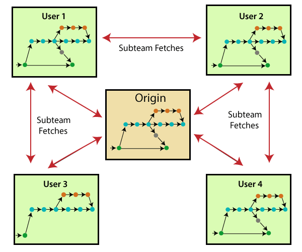
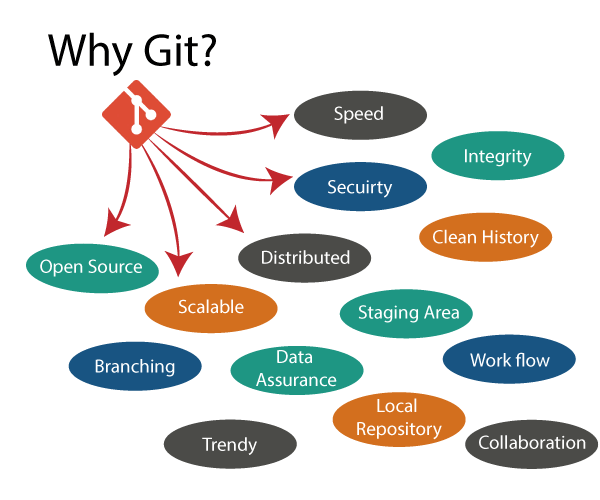
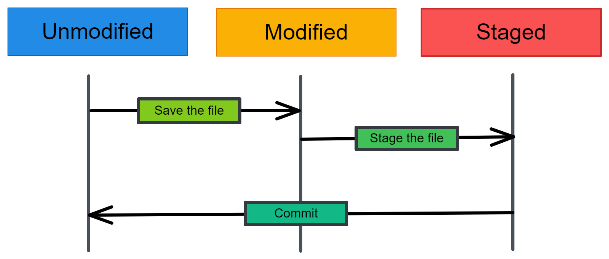

Github and Git Tutorial for Novice provides basic and advanced concepts of Git and GitHub. Our Git tutorial is designed for beginners and professionals.
Git is a modern and widely used distributed version control system in the world. It is developed to manage projects with high speed and efficiency. The version control system allows us to monitor and work together with our team members at the same workspace.
This tutorial will help you to understand the distributed version control system Git via the command line as well as with GitHub. The examples in this tutorial are performed on Windows.

What is Git?
Git is a distributed, open-source version control system. It enables developers and data scientists to track code, merge changes and revert to older versions - AWS. It allows you to sync changes with a remote server. Due to its flexibility and popularity, Git has become an industry standard as it supports almost all development environments, command-line tools, and operating systems.
Git is foundation of many services like GitHub and GitLab, but we can use Git without using any other Git services. Git can be used privately and publicly.
Git was created by Linus Torvalds in 2005 to develop Linux Kernel. It is also used as an important distributed version-control tool for the DevOps.
Git is easy to learn, and has fast performance. It is superior to other SCM tools like Subversion, CVS, Perforce, and ClearCase.
Features of Git
Some remarkable features of Git are as follows:
Open Source
Git is an open-source tool. It is released under the GPL (General Public License) license.
Scalable
Git is scalable, which means when the number of users increases, the Git can easily handle such situations.
Distributed
One of Git's great features is that it is distributed. Distributed means that instead of switching the project to another machine, we can create a "clone" of the entire repository. Also, instead of just having one central repository that you send changes to, every user has their own repository that contains the entire commit history of the project. We do not need to connect to the remote repository; the change is just stored on our local repository. If necessary, we can push these changes to a remote repository.
Security
Git is secure. It uses the SHA1 (Secure Hash Function) to name and identify objects within its repository. Files and commits are checked and retrieved by its checksum at the time of checkout. It stores its history in such a way that the ID of particular commits depends upon the complete development history leading up to that commit. Once it is published, one cannot make changes to its old version.
Branching and Merging
Branching and merging are the great features of Git, which makes it different from the other SCM tools. Git allows the creation of multiple branches without affecting each other. We can perform tasks like creation, deletion, and merging on branches, and these tasks take a few seconds only.
-
Below are some features that can be achieved by branching:
- We can create a separate branch for a new module of the project, commit and delete it whenever we want.
- We can have a production branch, which always has what goes into production and can be merged for testing in the test branch.
- We can create a demo branch for the experiment and check if it is working. We can also remove it if needed.
- The core benefit of branching is if we want to push something to a remote repository, we do not have to push all of our branches. We can select a few of our branches, or all of them together.
Staging Area
The Staging area is also a unique functionality of Git. It can be considered as a preview of our next commit, moreover, an intermediate area where commits can be formatted and reviewed before completion. When you make a commit, Git takes changes that are in the staging area and make them as a new commit. We are allowed to add and remove changes from the staging area. The staging area can be considered as a place where Git stores the changes. Although, Git doesn't have a dedicated staging directory where it can store some objects representing file changes (blobs). Instead of this, it uses a file called index.
Benefits of Git

Why Git?
Commits
There are three states of files in Git: modified, staged, and commit. When you make changes in a file, the changes are saved in the local directory. They are not part of the Git development history. To create a commit, you need to first stage changed files. You can add or remove changes in the staging area and then package these changes as a commit with a message describing the changes. 
GitHub as Portfolio
Most technical recruiters will ask for the portfolio projects or GitHub profile. This helps them determine whether a candidate is a good fit for their company. It is highly recommended to create a GitHub profile and update it regularly. Hiring managers are always on the lookout for candidates that are highly experienced in software development and contribute to open-source projects. Being able to analyze the GitHub portfolio helps them prepare questions for technical interview sessions.
Basic Commands
Before we jump into managing data science projects, let's learn about the most common Git commands that you will be using in every data science project. The basic commands include initializing the Git repository, saving changes, checking logs, pushing the changes to the remote server, and merging.
- git init create a Git repository in a local directory.
- git clone <remote-repo-address>: copy the entire repository from a remote server to remote directory. You can also use it to copy local repositories.
- git add <file.txt>: add a single file or multiple files and folders to the staging area.
- git commit –m “Message”: create a snapshot of changes and save it in the repository.
- git config use to set user-specific configurations like email, username, and file format.
- git status shows the list of changed files or files that have yet to be staged and committed.
- git push <remote-name> <branch-name>: send local commits to remote branch of repository.
- git checkout -b <<branch-name>: creates a new branch and switches to a new branch.
- git remote –v: view all remote repositories.
- git remote add <remote-name> <host-or-remoteURL>: add remote server to local repository.
- git branch –d <branch-name>: delete the branch.
- git pull merge commits to a local directory from a remote repository.
- git merge <branch-name>: after resolving merge conflicts the command blends selected branch into the current branch.
- git log show a detailed list of commits for the current branch.
Getting started
In this section, we are going to install Git and practise some basic git commands. Happy learningüòä
Installing Git
Git supports all operating systems. You can install it using command-line tools or directly download and install the setup.
Linux
For Debian/Ubuntu-based operating systems use `apt-get install git`, and if you are using another Linux-based system, check out the complete list of installing commands here.